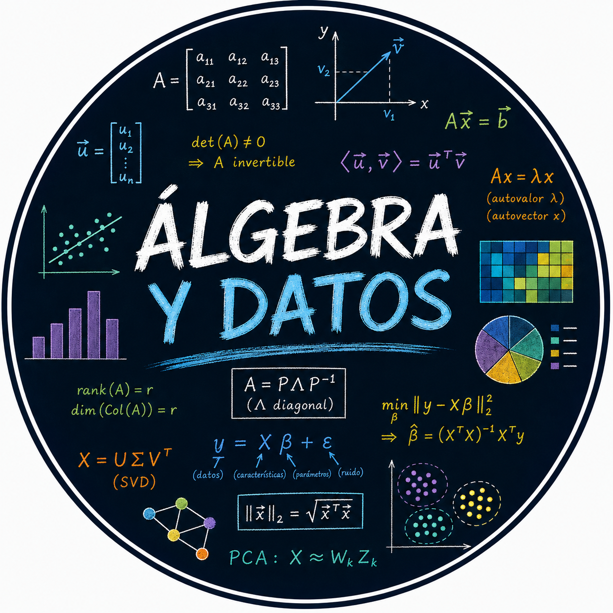

Desde el estudio de los sistemas lineales hasta las técnicas modernas de análisis de datos, el
álgebra lineal se ha convertido en una de las herramientas matemáticas más importantes
de la ciencia contemporánea. Sus conceptos constituyen hoy el lenguaje fundamental de disciplinas tan diversas como la física, la ingeniería, la economía y la
inteligencia artificial.
El álgebra lineal permite abstraer y estudiar estructuras como vectores, matrices y transformaciones
lineales, proporcionando métodos generales para describir fenómenos complejos y extraer información
de grandes conjuntos de datos. Gracias a estas herramientas, es posible comprender algoritmos de
aprendizaje automático, técnicas de reducción de dimensión y modelos estadísticos ampliamente
utilizados en la actualidad.
En este curso, exploraremos con profundidad y claridad los fundamentos del álgebra lineal y sus
aplicaciones al análisis de datos, desarrollando tanto la intuición geométrica como el manejo técnico necesarios para abordar problemas reales y avanzar hacia estudios más especializados.
El curso consiste en clases grabadas con sesiones en vivo, foro de dudas y comentarios, y materiales de apoyo. Esta planeado para ocho semanas.
| Módulo | Tema | Descripción |
|---|---|---|
| 1 | Introducción y fundamentos | Se comprenderá el papel del álgebra lineal y su importancia para el análisis y la ciencia de datos. Además, se aprenderá a representar información mediante vectores estudiando sus propiedades fundamentales. |
| 2 | Matrices y operaciones matriciales | Se estudiarán las matrices y sus operaciones, incluyendo la suma, resta y multiplicación de matrices. |
| 3 | Sistemas de ecuaciones lineales | Se desarrollarán métodos para resolver sistemas lineales y se analizará el significado geométrico de sus soluciones |
| 4 | Determinantes | Se estudiarán las propiedades de los determinantes y su relación con la invertibilidad de matrices y la resolución de sistemas. |
| 5 | Valores y vectores propios | Se aprenderá a calcular e interpretar autovalores y autovectores, herramientas esenciales para el análisis de datos y la reducción de dimensionalidad. |
| 5 | Proyecciones y mínimos cuadrados | Se introducirán las técnicas de proyección ortogonal y aproximación de datos, así como los fundamentos matemáticos de la regresión lineal. |
| 5 | Reducción de dimensionalidad | Se estudiarán métodos para simplificar conjuntos de datos complejos, identificar patrones y extraer información relevante mediante análisis de componentes principales. |